Diffusivity of TIP4P Water At Ambient Conditions (Gromacs)¶
Note
The results in this example were obtained using Packmol 21.0.2 and Gromacs 2024.5. Minor differences may arise when using a different version of Packmol or Gromacs, or even the same versions compiled with a different compiler.
Library Imports and Matplotlib Configuration¶
import io
import contextlib
import os
import numpy as np
import matplotlib.pyplot as plt
import matplotlib as mpl
from IPython.display import display, Markdown, Pretty
from numpy.typing import NDArray
from path import Path
from scipy.stats import chi2, gamma
from stacie import (
compute_spectrum,
estimate_acint,
ExpPolyModel,
UnitConfig,
plot_fitted_spectrum,
plot_extras,
)
from tabulate import tabulate
from utils import plot_instantaneous_percentiles, plot_cumulative_temperature_histogram
mpl.rc_file("matplotlibrc")
%config InlineBackend.figure_formats = ["svg"]
# You normally do not need to change this path.
# It only needs to be overridden when building the documentation.
DATA_ROOT = Path(os.getenv("DATA_ROOT", "./")) / "gromacs_tip4p/output/"
Manually fixed numbers of water molecules:
# NWATERS = np.array([400, 628, 1159, 1600])
# NWATERS = np.array([400, 507, 808, 1406, 2331, 3401, 4000])
NWATERS = np.array([1000, 2000, 4000, 8000])
Validation of the Conserved Quantity¶
def load_timestep(nwater: int):
"""Load the timestep from the first trajectory.
Note that this time step corresponds to one block, not one MD step.
"""
path_npz = DATA_ROOT / f"w{nwater:05d}_s000/nve_p00/pos.npz"
data = np.load(path_npz)
return data["time"][1] - data["time"][0]
def load_scalar_field(
nwater: int,
ensemble: str,
field: str,
npart: int = 1,
ntraj: int = 10,
) -> NDArray:
"""Load a scalar field from the Gromacs simulation data."""
sequences = []
for itraj in range(ntraj):
row = []
for ipart in range(npart):
path_npz = (
DATA_ROOT
/ f"w{nwater:05d}_s{itraj:03d}/{ensemble}_p{ipart:02d}/energy.npz"
)
if not path_npz.exists():
print(f"File {path_npz} not found, skipping.")
row = None
break
data = np.load(path_npz)
row.append(data[field] if len(row) == 0 else data[field][1:])
if row is not None:
row = np.concatenate(row)
sequences.append(row)
return np.array(sequences)
def plot_total_energy(
nwater: int,
npart: int = 1,
ntraj: int = 10,
):
"""Plot the conserved quantities of the NVE production runs."""
timestep = load_timestep(nwater)
energies = load_scalar_field(nwater, "nve", "total_energy", npart, ntraj)
fig, ax = plt.subplots()
for energies_traj in energies:
ax.plot(timestep * np.arange(len(energies_traj)), energies_traj)
ax.set_title(f"Total Energies of {ntraj} NVE Runs ({nwater} H$_2$O)")
ax.set_xlabel("Time [ps]")
ax.set_ylabel("Total Energy [kJ/mol]")
display(fig)
plt.close(fig)
for nwater in NWATERS:
display(Markdown(f"### {nwater} Water Molecules"))
plot_total_energy(nwater, npart=1)
1000 Water Molecules
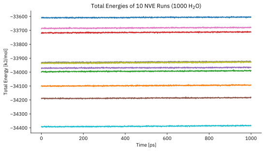
2000 Water Molecules
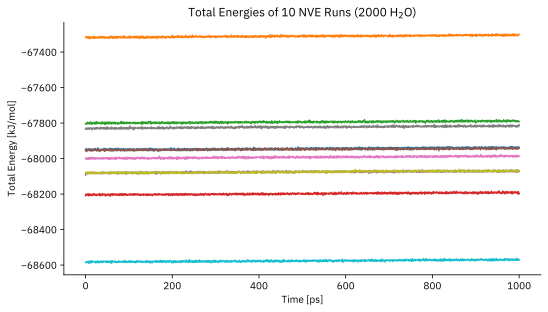
4000 Water Molecules
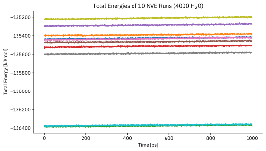
8000 Water Molecules
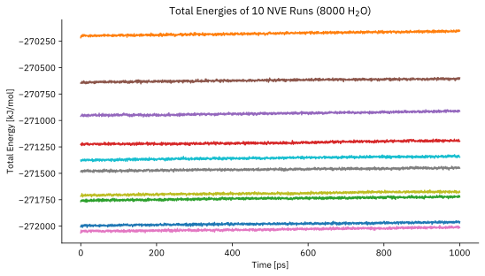
Percentiles of the Instantenous Temperature Distribution¶
def plot_gromacs_percentiles(
nwater: int,
ensemble: str,
field: str,
unitstr: str,
npart: int = 1,
ntraj: int = 10,
expected: None = None,
ymin: float | None = None,
ymax: float | None = None,
):
"""Plot the temperature of the NpT equilibration runs."""
timestep = load_timestep(nwater)
sequences = load_scalar_field(nwater, ensemble, field, npart, ntraj)
percents = np.array([95, 80, 50, 20, 5, 5])
if field == "temperature":
temp_d = 298.15
ndof = 6 * nwater - 3
expected = chi2.ppf(percents / 100, ndof) * temp_d / ndof
ymin = chi2.ppf(0.01, ndof) * temp_d / ndof
ymax = chi2.ppf(0.99, ndof) * temp_d / ndof
else:
expected = None
fig, ax = plt.subplots()
plot_instantaneous_percentiles(
ax,
timestep * np.arange(sequences.shape[1]),
sequences,
percents,
None if expected is None else expected,
ymin,
ymax,
)
ax.set_title(
f"{field.title()} percentiles during the {ensemble.upper()} run ({nwater} H$_2$O)"
)
ax.set_xlabel("Time [ps]")
ax.set_ylabel(f"{field.title()} [{unitstr}]")
display(fig)
plt.close(fig)
for nwater in NWATERS:
display(Markdown(f"### {nwater} Water Molecules"))
plot_gromacs_percentiles(nwater, "nvt", "temperature", "K")
plot_gromacs_percentiles(nwater, "npt", "temperature", "K")
plot_gromacs_percentiles(nwater, "nve", "temperature", "K", npart=1)
1000 Water Molecules
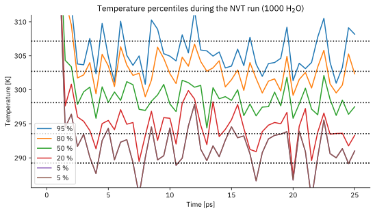
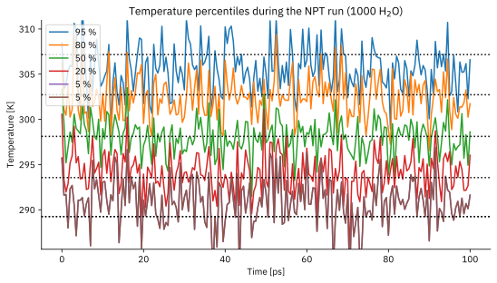
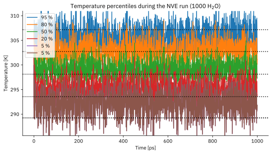
2000 Water Molecules
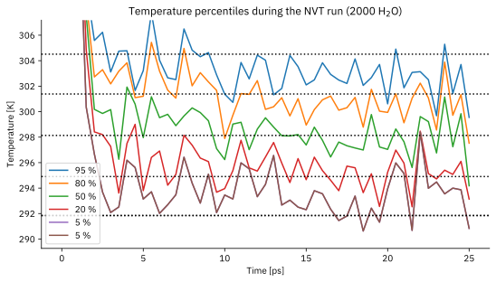
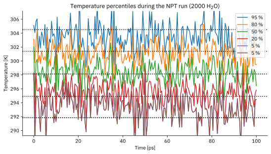
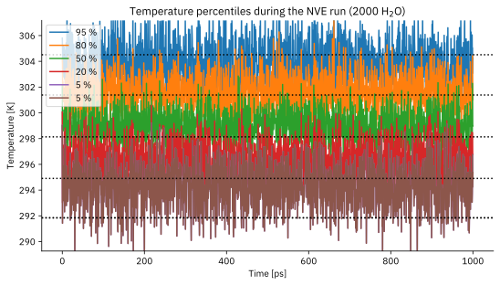
4000 Water Molecules
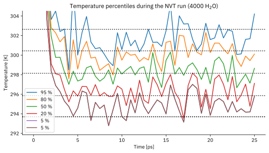
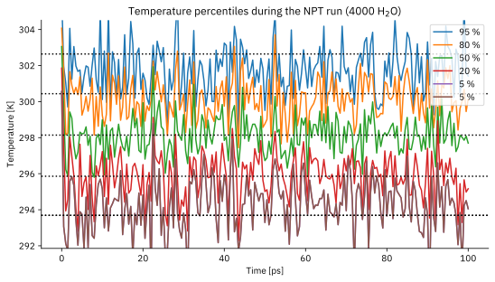
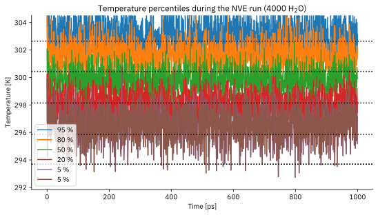
8000 Water Molecules
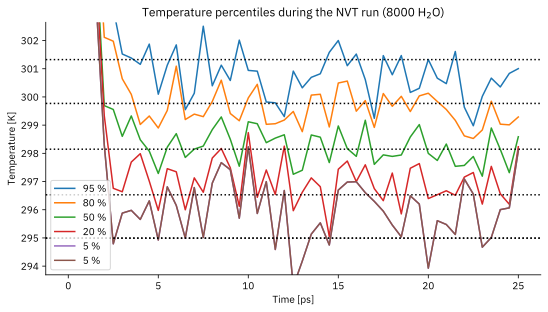
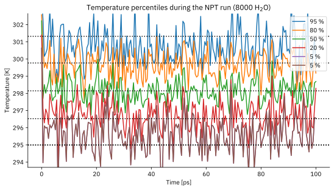
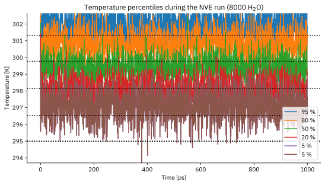
Percentiles of the Instantenous Temperature Distribution¶
for nwater in NWATERS:
display(Markdown(f"### {nwater} Water Molecules"))
plot_gromacs_percentiles(nwater, "npt", "density", "kg m$^{-3}$")
1000 Water Molecules
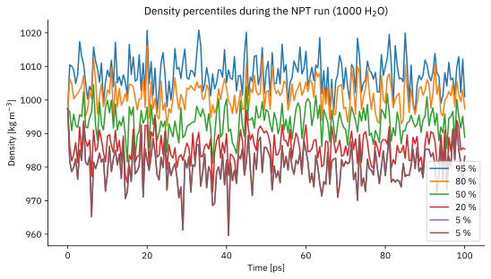
2000 Water Molecules
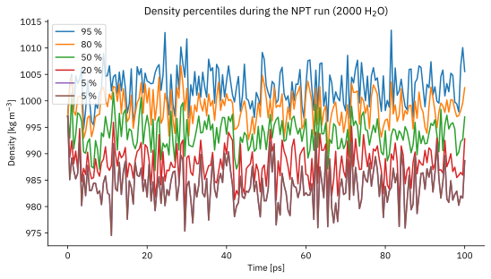
4000 Water Molecules
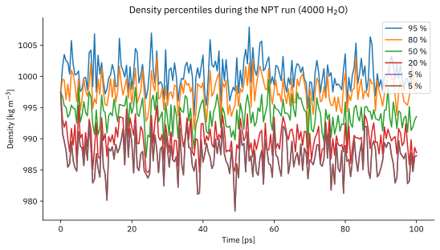
8000 Water Molecules
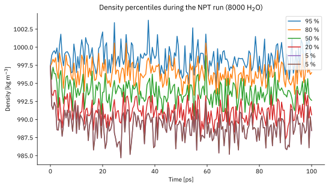
Cumulative Temperature Distribution¶
def plot_temperature_distribution(
nwater: int, ensemble: str, npart: int = 1, ntraj: int = 10
):
"""Plot cumulative distributions of the instantaneous temperature."""
# Load the temperature data from the NVE production runs.
temps = load_scalar_field(nwater, ensemble, "temperature", npart, ntraj)
# Plot the instantaneous and desired temperature distribution.
fig, ax = plt.subplots()
ndof = 6 * nwater - 3
temp_d = 298.15
plot_cumulative_temperature_histogram(ax, temps, temp_d, ndof, "K")
ax.set_title(
f"Cumulative Temperature Distribution ({nwater} H$_2$O, {ensemble.upper()})"
)
display(fig)
plt.close(fig)
for nwater in NWATERS:
display(Markdown(f"### {nwater} Water Molecules"))
plot_temperature_distribution(nwater, "npt")
plot_temperature_distribution(nwater, "nve", npart=1)
1000 Water Molecules
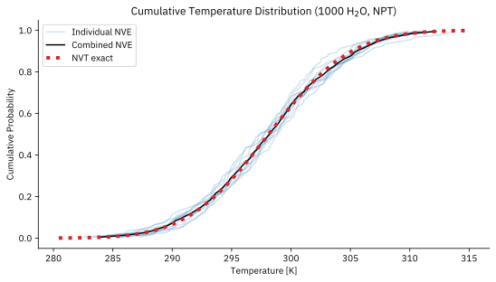
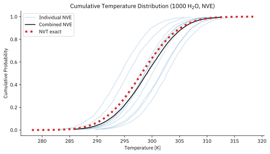
2000 Water Molecules
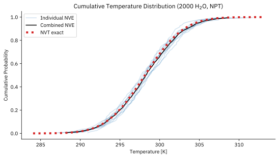
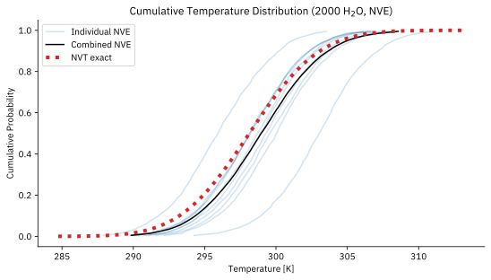
4000 Water Molecules
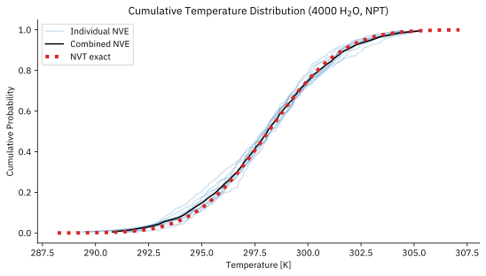
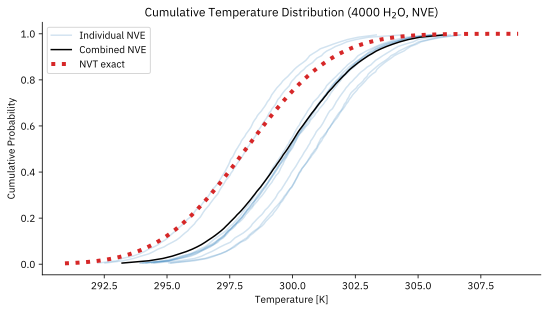
8000 Water Molecules
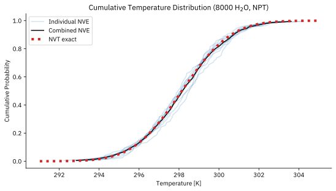
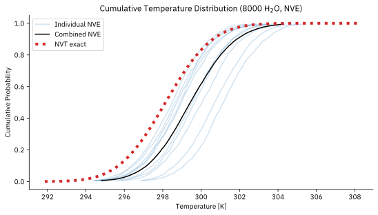
Analysis of correlations between atomic displacements¶
def load_trajectories(nwater: int, one_atom: bool, npart: int = 1, ntraj: int = 10):
"""Load the trajectory data for the given ensemble."""
timestep = load_timestep(nwater)
for itraj in range(ntraj):
# Load positions of centers of mass
vel = []
for ipart in range(npart):
path_npz = DATA_ROOT / f"w{nwater:05d}_s{itraj:03d}/nve_p{ipart:02d}/pos.npz"
if not path_npz.exists():
print(f"File {path_npz} not found, skipping.")
vel = None
break
data = np.load(path_npz)
timestep = data["time"][1] - data["time"][0]
nstep = data["time"].shape[0]
pos_oart = data["trajcom"]
pos_part = pos_oart[:, 0, :] if one_atom else pos_oart.reshape(nstep, -1)
vel.append(np.diff(pos_part, axis=0) / timestep)
if vel is not None:
yield np.concatenate(vel, axis=0).T / timestep
def plot_spectrum_stats(nwater: int, one_atom: bool, npart: int = 1, ntraj: int = 10):
"""Plot the spectrum statistics for the given parameters."""
spectra = []
timestep = load_timestep(nwater)
for traj in load_trajectories(nwater, one_atom, npart, ntraj):
spectra.append(compute_spectrum(traj, timestep=timestep, include_zero_freq=False))
freqs = spectra[0].freqs
average = np.mean([spectrum.amplitudes for spectrum in spectra], axis=0)
kappa = spectra[0].ndofs[1] / 2
fig, ax = plt.subplots()
ax.plot(freqs, average, "k-", lw=2, label="Average Spectrum")
ax.fill_between(
freqs,
gamma.ppf(0.025, kappa, scale=average / kappa),
gamma.ppf(0.975, kappa, scale=average / kappa),
alpha=0.5,
label="Estimated 95% Confidence Interval",
)
sampling_ppfs = np.quantile(
[spectrum.amplitudes for spectrum in spectra],
[0.025, 0.975],
axis=0,
)
ax.plot(freqs, sampling_ppfs[0], "r--", lw=1, label="2.5% Quantile")
ax.plot(freqs, sampling_ppfs[1], "r--", lw=1, label="97.5% Quantile")
case = "One Atom" if one_atom else "All Atoms"
ax.set_title(f"Spectrum Statistics: {case} ({nwater} H$_2$O, ndof = {2 * kappa:.0f})")
ax.set_xlabel("Frequency [THz]")
ax.set_ylabel("Amplitude [nm$^2$ ps]")
ax.legend()
display(fig)
plt.close(fig)
coeffs = None
if not one_atom:
# Analysis of the degrees of freedom
fig, ax = plt.subplots()
variance = np.var([spectrum.amplitudes for spectrum in spectra], axis=0, ddof=1)
estimated_ndofs = 2 * average**2 / variance
ndofmax = spectra[0].ndofs[1]
ax.plot(freqs, estimated_ndofs / ndofmax)
mask = freqs < 0.3 # 0.3 THz, just eyeballing it for now
mask[0] = False
ev = estimated_ndofs / ndofmax
dm = np.array(
[
np.ones(len(freqs)),
(1 - ev) * freqs**2,
]
).T
# Model fitting assuming relative errors
coeffs = np.linalg.lstsq(
dm[mask] / ev[mask].reshape(-1, 1), np.ones(mask.sum()), rcond=None
)[0]
ax.plot(
freqs, (coeffs[0] + coeffs[1] * freqs**2) / (1 + coeffs[1] * freqs**2), "r--"
)
ax.set_title(
f"Degrees of freedom: {case} ({nwater} H$_2$O, ndof = {2 * kappa:.0f})"
)
ax.set_xlabel("Frequency [THz]")
ax.set_ylabel("Relative Degrees of Freedom")
ax.set_yscale("log")
display(fig)
plt.close(fig)
return coeffs
coeffs_ndof = {}
for nwater in NWATERS:
display(Markdown(f"### {nwater} Water Molecules"))
plot_spectrum_stats(nwater, True, npart=1)
coeffs_ndof[nwater] = plot_spectrum_stats(nwater, False, npart=1)
1000 Water Molecules
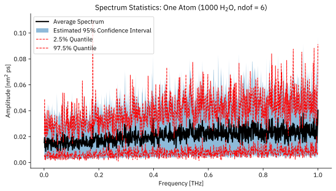
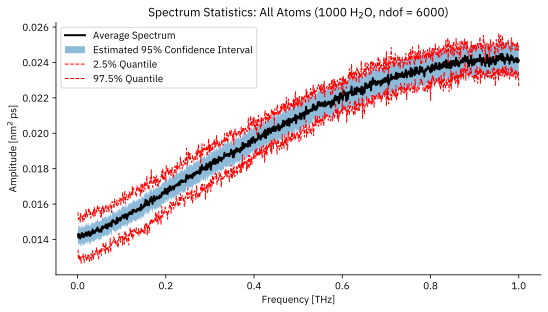
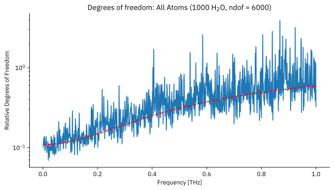
2000 Water Molecules
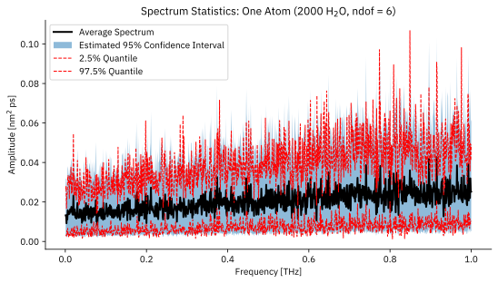
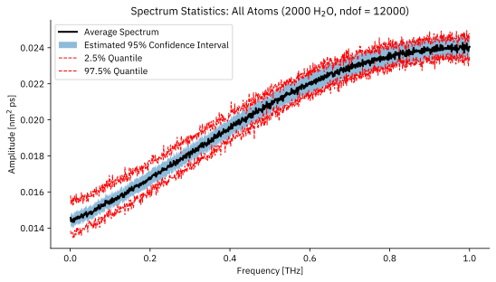
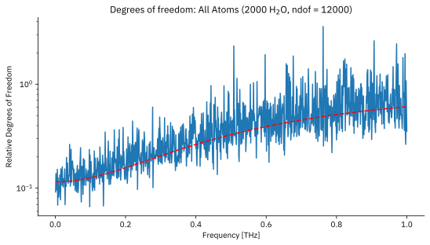
4000 Water Molecules
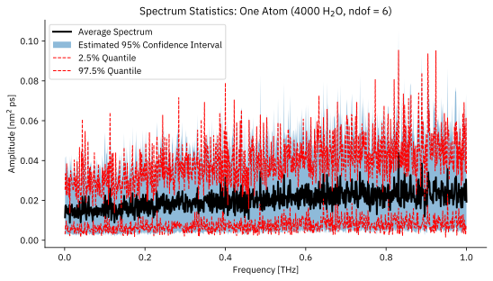
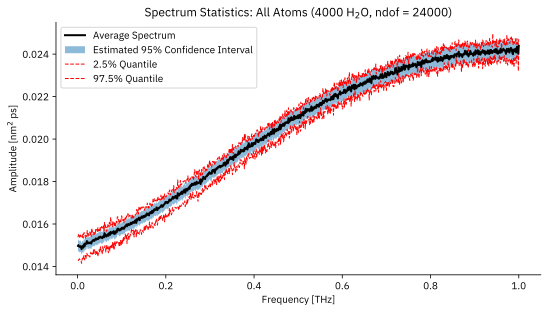
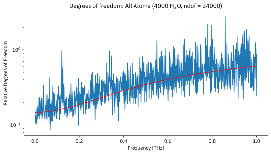
8000 Water Molecules
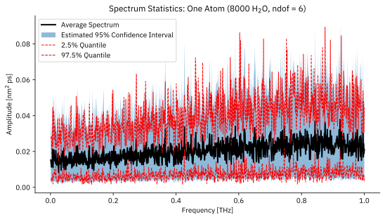
---------------------------------------------------------------------------
KeyboardInterrupt Traceback (most recent call last)
Cell In[12], line 5
3 display(Markdown(f"### {nwater} Water Molecules"))
4 plot_spectrum_stats(nwater, True, npart=1)
----> 5 coeffs_ndof[nwater] = plot_spectrum_stats(nwater, False, npart=1)
Cell In[11], line 27, in plot_spectrum_stats(nwater, one_atom, npart, ntraj)
25 spectra = []
26 timestep = load_timestep(nwater)
---> 27 for traj in load_trajectories(nwater, one_atom, npart, ntraj):
28 spectra.append(compute_spectrum(traj, timestep=timestep, include_zero_freq=False))
29 freqs = spectra[0].freqs
Cell In[11], line 16, in load_trajectories(nwater, one_atom, npart, ntraj)
14 timestep = data["time"][1] - data["time"][0]
15 nstep = data["time"].shape[0]
---> 16 pos_oart = data["trajcom"]
17 pos_part = pos_oart[:, 0, :] if one_atom else pos_oart.reshape(nstep, -1)
18 vel.append(np.diff(pos_part, axis=0) / timestep)
File ~/univ/molmod/stacie/venv/lib64/python3.13/site-packages/numpy/lib/_npyio_impl.py:254, in NpzFile.__getitem__(self, key)
252 if magic == format.MAGIC_PREFIX:
253 bytes = self.zip.open(key)
--> 254 return format.read_array(bytes,
255 allow_pickle=self.allow_pickle,
256 pickle_kwargs=self.pickle_kwargs,
257 max_header_size=self.max_header_size)
258 else:
259 return self.zip.read(key)
File ~/univ/molmod/stacie/venv/lib64/python3.13/site-packages/numpy/lib/format.py:851, in read_array(fp, allow_pickle, pickle_kwargs, max_header_size)
849 read_count = min(max_read_count, count - i)
850 read_size = int(read_count * dtype.itemsize)
--> 851 data = _read_bytes(fp, read_size, "array data")
852 array[i:i+read_count] = numpy.frombuffer(data, dtype=dtype,
853 count=read_count)
855 if fortran_order:
File ~/univ/molmod/stacie/venv/lib64/python3.13/site-packages/numpy/lib/format.py:986, in _read_bytes(fp, size, error_template)
981 while True:
982 # io files (default in python3) return None or raise on
983 # would-block, python2 file will truncate, probably nothing can be
984 # done about that. note that regular files can't be non-blocking
985 try:
--> 986 r = fp.read(size - len(data))
987 data += r
988 if len(r) == 0 or len(data) == size:
File /usr/lib64/python3.13/zipfile/__init__.py:1015, in ZipExtFile.read(self, n)
1013 self._offset = 0
1014 while n > 0 and not self._eof:
-> 1015 data = self._read1(n)
1016 if n < len(data):
1017 self._readbuffer = data
File /usr/lib64/python3.13/zipfile/__init__.py:1091, in ZipExtFile._read1(self, n)
1089 elif self._compress_type == ZIP_DEFLATED:
1090 n = max(n, self.MIN_READ_SIZE)
-> 1091 data = self._decompressor.decompress(data, n)
1092 self._eof = (self._decompressor.eof or
1093 self._compress_left <= 0 and
1094 not self._decompressor.unconsumed_tail)
1095 if self._eof:
KeyboardInterrupt:
def tablulate_coeffs():
"""Print the coefficients for the degrees of freedom."""
table = [
[
"Water molecules",
"Fraction of NDOF at f=0",
"IDeal NDOF (6N-3)",
"tau NDOF [ps]",
]
]
for nwater in NWATERS:
coeffs = coeffs_ndof[nwater]
rel_ndof0 = coeffs[0]
ndof = nwater * 6 - 3
tau = np.sqrt(coeffs[1]) / (2 * np.pi)
table.append([nwater, f"{rel_ndof0:.3f}", f"{ndof:d}", f"{tau:.3f}"])
print(tabulate(table, headers="firstrow"))
tablulate_coeffs()
Diffusivity with Uncertainty Quantification¶
def analyze_diffusivity_combined(
nwater: int,
*,
npart: int = 1,
ntraj: int = 10,
coeffs: np.ndarray | None = None,
):
"""Analyze the diffusivity of water using STACIE."""
# Analyze each simulation separately and collect statistics
# over the trajectories.
timestep = load_timestep(nwater)
spectrum = compute_spectrum(
(traj for traj in load_trajectories(nwater, False, npart, ntraj)),
timestep=timestep,
include_zero_freq=False,
)
freqs = spectrum.freqs
if coeffs is not None:
correction = (coeffs[0] + coeffs[1] * freqs**2) / (1 + coeffs[1] * freqs**2)
assert (correction <= 1).all()
spectrum.ndofs *= correction
uc = UnitConfig(
acint_symbol="D",
acint_unit=1e6,
acint_unit_str="m²/s",
time_unit_str="ps",
time_fmt=".3f",
freq_unit_str="THz",
)
with io.StringIO() as buf, contextlib.redirect_stdout(buf):
result = estimate_acint(spectrum, ExpPolyModel([0, 2]), verbose=True, uc=uc)
display(Pretty(buf.getvalue()))
# Plot some basic analysis figures.
fig, ax = plt.subplots()
plot_fitted_spectrum(ax, uc, result)
display(fig)
plt.close(fig)
fig, axs = plt.subplots(2, 2)
plot_extras(axs, uc, result)
display(fig)
plt.close(fig)
# Return the diffusivity and its uncertainty.
return result.acint, result.acint_std
results = {}
for nwater in NWATERS:
display(Markdown(f"### {nwater} Water Molecules"))
results[nwater] = analyze_diffusivity_combined(
nwater, npart=1, coeffs=coeffs_ndof[nwater]
)
Extrapolation to Infinite Box Size¶
def plot_extrapolation():
fig, ax = plt.subplots()
diffusivities = np.array([results[nwater][0] for nwater in NWATERS])
diffusivities_err = np.array([results[nwater][1] for nwater in NWATERS])
unit_conversion = 1e-6 # = (nm^2/ps) / (m^2/s)
ax.errorbar(
NWATERS ** (-1 / 3),
diffusivities * unit_conversion,
yerr=diffusivities_err * unit_conversion,
fmt="o-",
)
ax.set_xlabel("Number of Water Molecules")
ax.set_xticks(
[0, *(NWATERS ** (-1 / 3)).tolist()],
[r"$\infty$", *[str(nwater) for nwater in NWATERS]],
)
ax.set_ylabel("Diffusivity [m$^2$/s]")
ax.set_title("Diffusivity of TIP4P Water at Ambient Conditions")
ax.legend()
display(fig)
plt.close(fig)
plot_extrapolation()